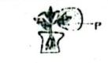
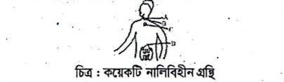

নিচের চিত্রের আলোকে ১৪নং প্রশ্নের উত্তর দাও :

🪴 [এখানে ১৪ নং প্রশ্নের চিত্রটি প্রদর্শিত হবে — biology_q14.jpg]
১৪. চিত্রে P-প্রক্রিয়াটি উদ্ভিদদেহে—
i. পানি শোষণে সহায়তা করে
ii. পাতায় সহনশীল তাপমাত্রা বজায় রাখে
iii. এর অভাবে বিপাকীয় কার্যক্রম ব্যাহত হয়
নিচের কোনটি সঠিক?
(ক) i ও ii
(খ) i ও iii
(গ) ii ও iii
(ঘ) i, ii ও iii
১৫. নিচের কোনটি ক্ষারীয় মূত্র তৈরি করে?
(ক) মাছ, বেগুন
(খ) আপেল, ডিম
(গ) দুধ, পটল
(ঘ) পটল, আপেল
১৬. শ্বসনের অভ্যন্তরীণ প্রভাবক কোনটি?
(ক) তাপমাত্রা
(খ) অক্সিজেন
(গ) উৎসেচক
(ঘ) কার্বন-ডাইঅক্সাইড
১৭. লিগামেন্ট হচ্ছে—
i. পীততন্তু দিয়ে গঠিত
ii. গুচ্ছাকার
iii. শাখা-প্রশাখাযুক্ত
নিচের কোনটি সঠিক?
(ক) i ও ii
(খ) i ও iii
(গ) ii ও iii
(ঘ) i, ii ও iii
১৮. স্নায়ু টিস্যুর কাজ কোনটি?
(ক) অঙ্গ সঞ্চালন
(খ) স্মৃতি সংরক্ষণ
(গ) অভ্যন্তরীণ কাঠামো গঠন
(ঘ) বিভিন্ন অঙ্গের আবরণ তৈরি
নিচের চিত্রটি লক্ষ্য কর এবং ১৯ ও ২০নং প্রশ্নের উত্তর দাও :

🧬 [এখানে ১৯ ও ২০ নং প্রশ্নের চিত্রটি প্রদর্শিত হবে — biology_q19.jpg]
১৯. চিত্রের A গ্রন্থি থেকে কোন হরমোন নিঃসৃত হয়?
(ক) গোনাডোট্রপিক
(খ) থাইরক্সিন
(গ) সোমাটোট্রপিক
(ঘ) গ্লুকাগন
২০. চিত্রের D গ্রন্থি থেকে নিঃসৃত হরমোন—
i. দেহের অত্যাবশ্যকীয় বিপাকীয় কার্যকলাপ নিয়ন্ত্রণ করে
ii. কঠিন মানসিক চাপ থেকে পরিত্রাণে সাহায্য করে
iii. দেহের রোগ প্রতিরোধ ক্ষমতা বিকাশে সাহায্য করে
নিচের কোনটি সঠিক?
(ক) i ও ii
(খ) i ও iii
(গ) ii ও iii
(ঘ) i, ii ও iii
২১. RNA-তে কোনটি অনুপস্থিত?
(ক) এডিনিন
(খ) থায়ামিন
(গ) গুয়ানিন
(ঘ) সাইটোসিন
২২. কোনটি পরজীবী খাদ্য শিকলের উদাহরণ?
(ক) শৈবাল → ছোট মাছ → রাজপাখি
(খ) ঘাস → ফড়িং → ব্যাঙ
(গ) পচা কাঠ → ছত্রাক → কেঁচো
(ঘ) মানুষ → মশা → ডেঙ্গু ভাইরাস
২৩. প্লাজমিড এর কাটা অংশ সংযুক্ত করার বিশেষ এনজাইম কোনটি?
(ক) রেস্ট্রিকশন
(খ) লাইগেজ
(গ) লাইপেজ
(ঘ) ল্যাকটেজ
২৪. জিনগত পরিবর্তনের মাধ্যমে—
i. ধানে ভিটামিন A স্থানান্তর করা হয়েছে
ii. গরুর দুধে আমিষের পরিমাণ বৃদ্ধি করা হয়েছে
iii. ইস্ট হতে হেপাটাইটিসের টিকা তৈরি হয়েছে
নিচের কোনটি সঠিক?
(ক) i ও ii
(খ) i ও iii
(গ) ii ও iii
(ঘ) i, ii ও iii
২৫. কোন রক্ত গ্রুপটি সর্বজনীন গ্রহীতা বলে?
(ক) গ্রুপ-'O'
(খ) গ্রুপ-'A'
(গ) গ্রুপ-'B'
(ঘ) গ্রুপ-'AB'